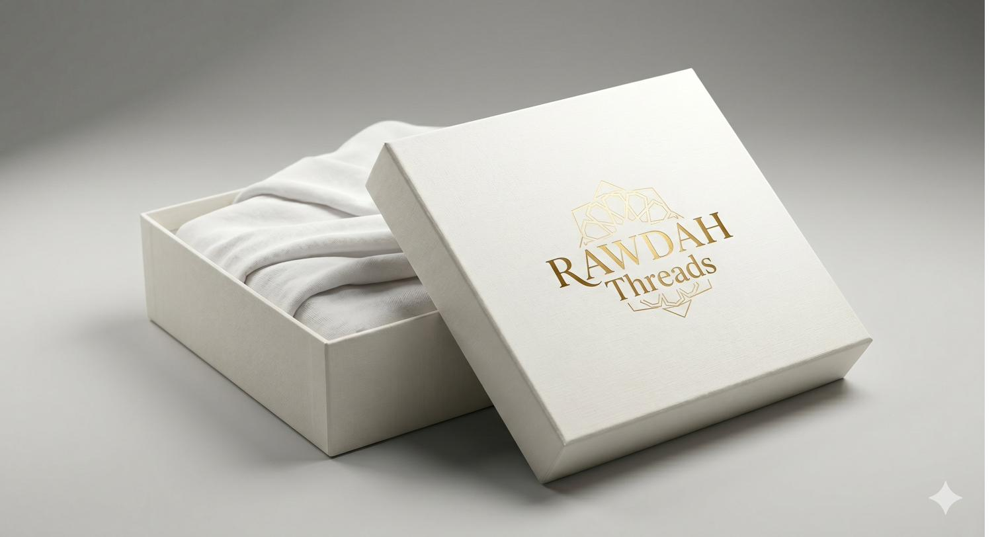

NOUVEAU

Kit Sakina
Ensemble Complet Ihram Premium
- 2 Pièces Ihram 100 % Coton Premium (Rizam + Izar)
- Ceinture Sécurisée & Durable
- Sandales Légères & Confortables
- Guide Rituel Complet (FR/AR)
- Pochette de Rangement Premium
59 €
Prix barré : 79 €
25 % OFF
Remboursement 30 jours • Livraison 48 h